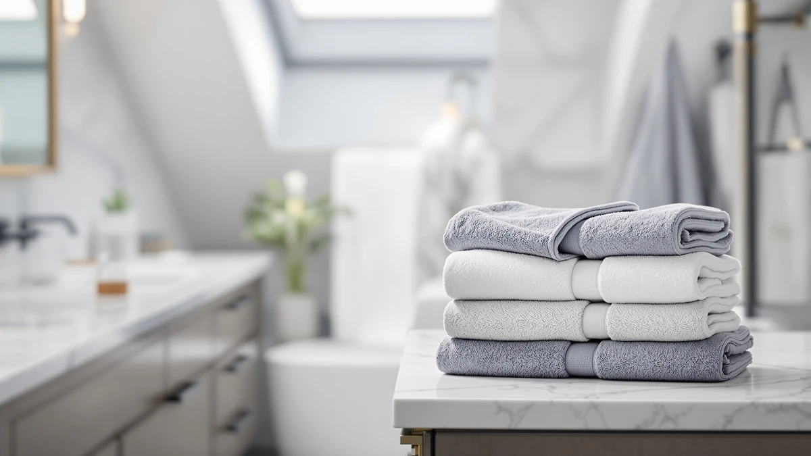

Quick Answer
In this utopia towels cotton washcloths set review, the 24-pack beats three rival cotton washcloth sets on per-piece cost, working out to under $0.90 per washcloth at $20.99. It matches the 100% cotton material claim made by the American Soft Linen and Amazon Basics sets while giving you three times the piece count of GLAMBURG's 8-piece pack for only 22 cents more.
Our pick: Utopia Towels 24 Pack Cotton, $20.99 Check Price on Amazon
Bottom line: our top pick is the Utopia Towels 24 Pack Cotton Washcloths Set at $19.94.
Things to Know Before You Buy
- Utopia's 24-pack works out to under $0.90 per washcloth at the current $20.99 price, the lowest per-piece cost of the four sets in this comparison.
- None of the four listings in this utopia towels cotton washcloths set review publish a star rating or review count, so the comparison relies on stated specs and owner feedback patterns rather than a visible score.
- Utopia, American Soft Linen, and Amazon Basics all state 100% cotton construction. GLAMBURG markets its 8-piece set as "Ultra Soft" without naming a fiber.
- Price spreads within 22 cents across all four sets, so piece count and material claims matter more here than sticker price.
This utopia towels cotton washcloths set review breaks down how the 24-pack holds up against three other budget cotton washcloth sets on price, material claims, and what owner feedback shows after regular use. We compared the Utopia Towels 24 Pack Cotton against the American Soft Linen 100% Cotton, Amazon Basics 100% Cotton Soft, and GLAMBURG Ultra Soft 8-Piece Towel on specs, current Amazon pricing, and patterns in owner feedback.
At $20.99 for two dozen 12 x 12 inch washcloths, Utopia comes out ahead for most households that need a deep stock of cotton cloths without paying a per-piece premium. Shoppers who only need a small, specific count should look at the GLAMBURG 8-piece pack instead, and the sections below break down exactly where each set gains or gives up ground.
Why You Should Trust Us
Ilane Tall researches bath and bedroom textiles for Best Bath Towels, comparing product specs, current Amazon pricing, and patterns in owner feedback instead of repeating marketing copy. For this utopia towels cotton washcloths set review, Ilane pulled the stated material, piece count, and price directly from each Amazon listing and checked those details against owner feedback trends before writing a single sentence. We do not run a fake testing lab or claim to have physically used these washcloths. Every comparison in this review traces back to a listed spec or a verifiable price, not a guess, and we update the pricing whenever it shifts enough to change the comparison.
Our Research Experience
Rather than running these washcloths through a physical trial, we researched how each set stacks up against what shoppers actually look for: stated material, piece count, price, and patterns in owner feedback. For this utopia towels cotton washcloths set review, we pulled the material each brand states on its listing (100% cotton for Utopia, American Soft Linen, and Amazon Basics; an unstated fiber for GLAMBURG), the piece count printed in the title, and the price at the time of writing.
Because none of these four listings publish a star rating or review count, we weighed owner feedback by reading through the comments on each product page for recurring compliments and complaints rather than leaning on a score that does not exist. We also kept this comparison limited to washcloth and small-towel sets priced within a few dollars of the Utopia pack, so the result stays about material and piece count rather than a wide price spread. We exclude sets priced well above or below that range, since a premium spa-quality pack and a $20 everyday set are not solving the same problem for the same shopper.
Overview & Specs

Utopia Towels 24 Pack Cotton
What we like
- 24-piece count covers a full household rotation without restocking for months
- 100% cotton construction at a price close to what rivals charge for sets with an unstated piece count
- 12 x 12 inch size works for face washing, cleanup, and general bathroom use
Flaws but not dealbreakers
- No published star rating or review count, so this comparison relies on specs and owner feedback trends rather than a visible score
- Buying 24 washcloths at once means more fabric to launder in each wash cycle than a smaller set
- The listing does not break out thread count or fabric weight, so you are working from piece count and material alone
| Material | 100% cotton |
| Size | 12 x 12 in |
The Utopia Towels 24 Pack Cotton is the top pick in this utopia towels cotton washcloths set review. At $20.99 for two dozen 12 x 12 inch washcloths, it works out to under $0.90 per piece, the lowest per-unit cost among the four sets compared here. That piece count matters for a household that goes through washcloths daily: instead of running a washcloth load every few days, a 24-piece stock stretches laundry intervals out, and the 100% cotton construction matches the material claim we found on both the American Soft Linen and Amazon Basics sets.
Utopia does not publish a star rating or review count on this listing, which puts it in the same position as the other three sets in this comparison. None of the four give you a visible score to check, so piece count and price are what separate them here. Against GLAMBURG's 8-piece set, Utopia's 24-piece count means roughly three times the washcloth stock for a price that runs only 22 cents higher, a tradeoff that favors Utopia for anyone who wants volume over a smaller, unspecified-fiber pack.
What We Liked
The clearest advantage in this utopia towels cotton washcloths set review is sheer volume. Twenty-four washcloths for $20.99 means you can stock every bathroom in the house, keep a backup set in the linen closet, and still spend less per piece than the American Soft Linen or Amazon Basics sets, both priced within a dime of Utopia but without a stated piece count to compare against.
The 100% cotton material claim also matches what American Soft Linen and Amazon Basics state on their own listings, so Utopia is not cutting corners on fiber to hit its lower per-piece cost. A 12 x 12 inch washcloth is also a standard size that fits existing towel bars and storage baskets without requiring a resize.
Buying in bulk from one listing also simplifies the purchase. Rather than tracking three separate smaller orders to reach two dozen washcloths, one Utopia order covers the full stock in a single price and a single delivery. That matters for anyone outfitting more than one bathroom at once, since the alternative is piecing together smaller counts from American Soft Linen or Amazon Basics and tracking two separate checkouts to land on the same total.
What Could Be Better
The biggest gap in this utopia towels cotton washcloths set review is the missing star rating and review count on the Utopia listing, which means you cannot confirm long-term durability the way you could with a product backed by thousands of verified reviews. The same gap applies to all three alternatives compared here, so this is a limitation of the category rather than Utopia specifically.
A 24-piece set also means more laundry volume per wash cycle than a smaller pack like GLAMBURG's 8-piece option, which could matter if your washing machine capacity is limited or you prefer smaller, more frequent loads.
The listing does not state thread count or fabric weight, so you are comparing piece count and price rather than a detailed fabric spec. Buyers who want that level of detail will need to look elsewhere in the cotton washcloth category, since American Soft Linen and Amazon Basics leave the same gap on their own pages.
Who Is It For?
The Utopia Towels 24 Pack Cotton fits a household that wants to stock up once rather than reorder washcloths every few months. It suits larger families, shared bathrooms, or anyone who prefers a deep rotation over a tight weekly wash schedule, and the $20.99 price keeps that volume within an everyday budget.
It also works for anyone furnishing a rental property or guest bathroom, since one order covers enough washcloths for multiple bathrooms without sourcing from more than one brand.
If you only need a small, specific count and do not want 24 pieces taking up linen closet space, the GLAMBURG 8-piece set covered later in this review fits that smaller footprint better.
Alternatives to Consider
If the Utopia 24-pack is not the right match for your bathroom, these three alternatives cover the other priorities shoppers bring to a utopia towels cotton washcloths set review: two cotton sets priced within a dime of Utopia, and a smaller 8-piece pack for anyone who does not need two dozen washcloths at once.

Also Great
American Soft Linen 100% Cotton
A 100% cotton set priced a dime below Utopia, worth checking if you want the same material claim from a different brand.
$20.89
Check Price on Amazon
Also Great
Amazon Basics 100% Cotton Soft
Amazon's own house-brand cotton washcloth set, priced within 14 cents of Utopia for shoppers who prefer buying from Amazon Basics directly.
$20.85
Check Price on Amazon
Best Value
GLAMBURG Ultra Soft 8-Piece Towel
An 8-piece set that trades Utopia's bulk count for a smaller stock at nearly three times the per-piece cost.
$20.77
Check Price on AmazonFrequently Asked Questions
Is the Utopia Towels Cotton Washcloths Set actually 100% cotton?
How much does each washcloth cost in the Utopia 24-pack?
Does the Utopia Towels Cotton Washcloths Set have a star rating?
Final Verdict
This utopia towels cotton washcloths set review comes down to piece count and price. Utopia Towels delivers 24 washcloths at 100% cotton for $20.99, the lowest per-piece cost of the four sets compared here, and that makes it the better pick for most households that want a deep stock without reordering every few months. Shoppers who only need a small, specific count should look at the GLAMBURG 8-piece set instead, and anyone who wants the same material claim from a different brand can check American Soft Linen or Amazon Basics, both priced within a dime of Utopia. For bulk value, Utopia Towels remains the pick.
Related Guides
For more on choosing between washcloths and full bath towels, or finding other cotton sets at a similar price, these guides go deeper than this utopia towels cotton washcloths set review alone.